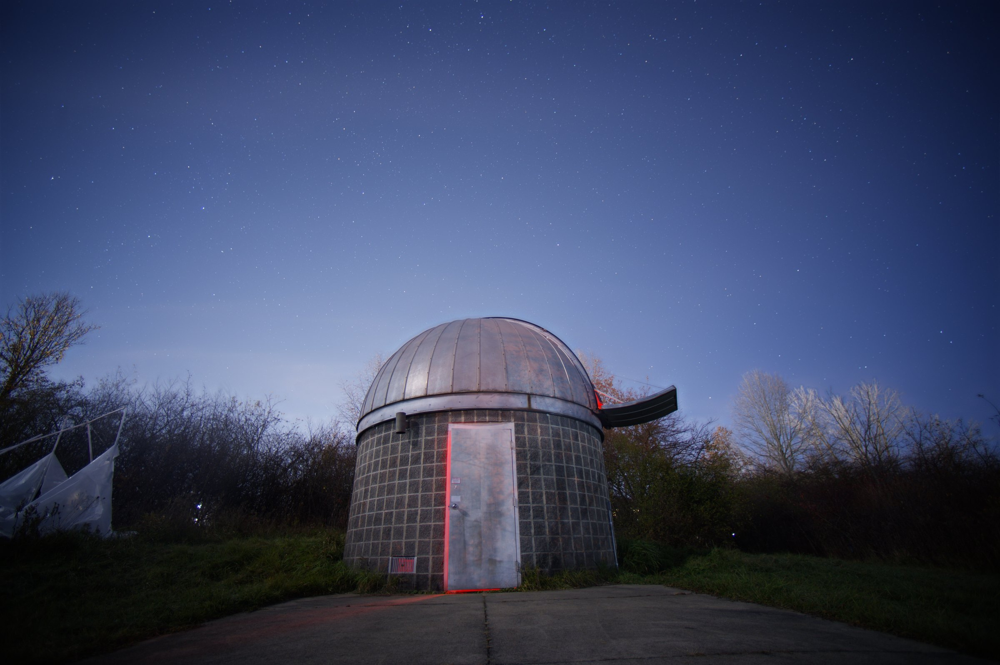

Sheet RD-03 · Part 03, Lens
Framing the Cosmos
Essays on how iconic space photographs shape what we believe about the cosmos and about ourselves.
By Rami Daud, a photographer who spent four years documenting research at NASA Glenn. New stories are published here first, then on Substack.
Latest

You Probably Won’t Get It Until You See It
A night at the Kent State University Observatory, a telescope with no camera, and a friend who didn’t get it until he looked.
Read the story →The series


Now and next

The project started as essays about other people’s photographs. Now it includes my own.
Since Oct. 23, 2026, I have been making deep-sky images with a rented ZWO Seestar S30 Pro at Starfront Observatories near Rockwood, Texas, run remotely from Kent, Ohio. Part 5 is the first story from a night at the eyepiece.
In 2017 I was the sole photographer on NASA Glenn’s coverage of the total eclipse, and the diamond ring ran as NASA Image of the Day.